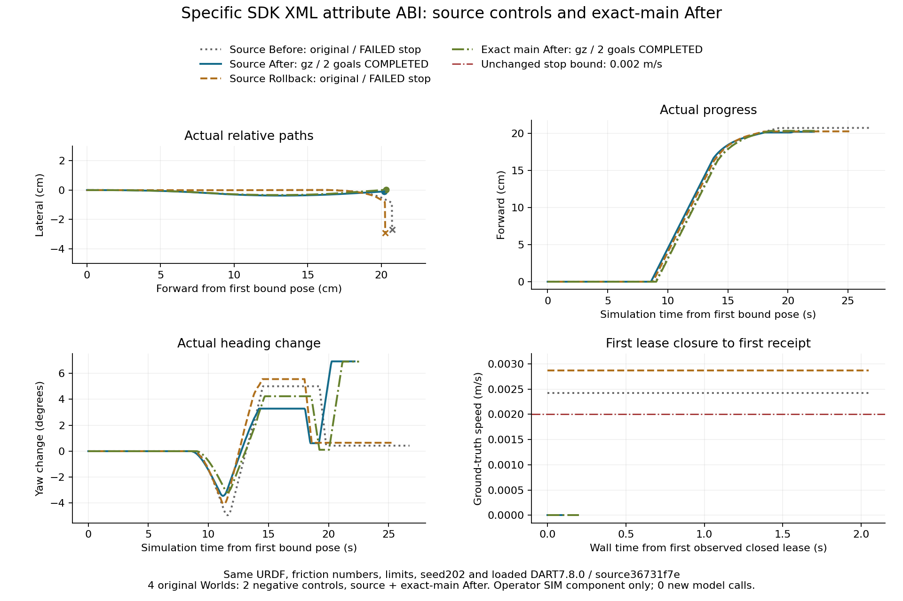
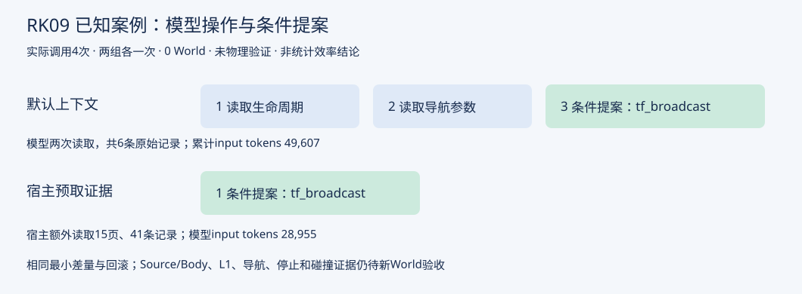

14个模型计划槽、6个World计划槽全部 NOT_RUN；模型调用0，新World0。没有用历史图像假装本次机器人运行。既有有限SIM工程签署保持，通用自主能力仍未证明。
逐项模型计划与未运行原因 · World计划与未运行原因 · 可执行离线CLI示例原始main d4f13916，两个After成功、Before/Rollback阴性。图表使用既有实测证据；不是当前closeout源码的新World，也不是模型自主发现。

原始来源与摘要原始source f9224241：模型4次调用、两份条件提案、0新World。它们不是本次FC01正例。

本页只展示真实既有材料，没有生成伪装成机器人运行的视频或动画。